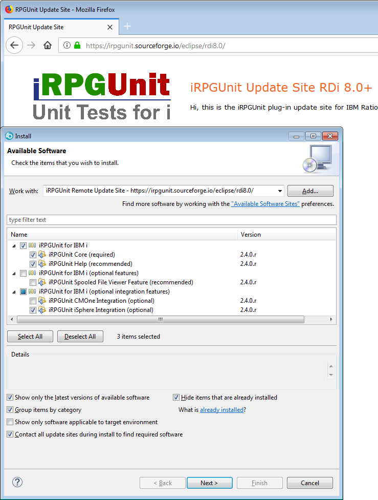

Installing the iRPGUnit plug-in requires three steps:
Everything of category iRPGUnit for IBM i belongs to the base components of iRPGUnit and must or at least should be installed:
Features of category iRPGUnit for IBM i (optional features) are optional and can be installed depending on your needs:
Features of category iRPGUnit for IBM i (optional integration features) are optional and can be installed depending on your needs:
From the main menu, select "Help > Eclipse Marketplace..." to enter the marketplace. Search for 'iRPGUnit' and click the [Install] button:
Then select the options you want to install, press the [Confirm] button and follow the instructions given on the following pages.
From the main menu, select "Help > Install New Software..." to enter the "Install" dialog.
Then Drag-and-Drop the URL of the update site into the "Work with:" field:

Then select the options you want to install, press the [Next] button and follow the instructions given on the following pages.
The URL of the iRPGUnit plug-in site is:
http://www.tools400.de/rpgunit/update/rdp8.0/
Go to the iRPGUnit download page at SourceForge.
Then follow these steps to create your local update site:
Select the options you want to install, press the [Next] button and follow the instructions given on the following pages.
Go to the iRPGUnit download page at SourceForge.
Then follow these steps to create your local update site:
Select the options you want to install, press the [Next] button and follow the instructions given on the following pages.
There are several options to install the library. Your favourite should be the install dialog of the iRPGUnit plug-in.
The most easiest way to install the library is to upload it from the preference page of the iRPGUnit plug-in. However that requires that you are allowed to start a FTP connection to your host.
Take these steps to use the embedded installer:
| You do not necessarily need to compile the library unless you want to run the RPGUnit self-test or in case you did not use the default library name RPGUNIT. |
Download the zipped update site from the iRPGUnit 'Files' section at SourceForge, e.g. iRPGUnit for RDi 8.0+ (v2.2.2.r Update Site).zip.
Unzip upload_savf.bat from sub-folder Server to an empty folder on your PC.
Unzip RPGUNIT.SAVF from sub-folder Server to the same folder on your PC.
Run upload_savf.bat with the following parameters:
upload_savf.bat hostName userName passwordCalling upload_savf.bat without parameters displays usage instructions.
Go ahead with Compiling the RPGUnit Library the library.
Please create an empty save file on your server before sending the file from your PC:
Create save file: CRTSAVF FILE(QGPL/RPGUNIT)Now use FTP to transfer the save file to your server:
Open a DOS box: XP, Win7: Start -> Execute -> cmd.exe Start an FTP session to your server: FTP your.server.com Transfer save file: binary put RPGUnit_v* QGPL/RPGUNIT Terminate FTP session: quit
Go ahead with Compiling the RPGUnit Library the library.
Logon to your server, restore library RPGUNIT from the save
file and add the library to your library list:
RSTLIB SAVLIB(RPGUNIT) DEV(*SAVF) SAVF(QGPL/RPGUNIT) ADDLIBLE LIB(RPGUNIT)Execute the Rexx install script
A_INSTALL to create the
RPGUnit objects:
STRREXPRC SRCMBR(A_INSTALL) SRCFILE(QBUILD) PARM('install')
Use the following command if you used a different library name, e.g. RPGUNIT3:
STRREXPRC SRCMBR(A_INSTALL) SRCFILE(QBUILD) PARM('install RPGUNIT3')
By default the iRPGUnit objects are compiled without debug data. Add parameter list if you want to compile the objects with debug data:
STRREXPRC SRCMBR(A_INSTALL) SRCFILE(QBUILD) PARM('install RPGUNIT list')
Finished.
| Do not forget to add library RPGUNIT to the library list of your Remote Connection or change the product library from *LIBL to the actual library on the iRPGUnit preference page. |